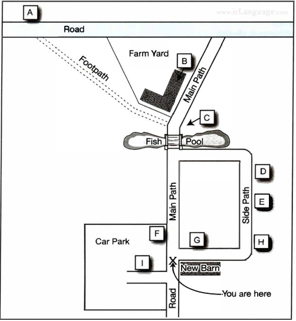

Questions 1–10
Complete the notes below.
Write ONE WORD AND/OR A NUMBER for each answer.
HIRING A PUBLIC ROOM
Example
- the Main Hall – seats 200
Room and cost
- the 1 Room – seats 100
- Cost of Main Hall for Saturday evening: £ 2
- + £250 deposit (3 payment is required)
- Cost includes use of tables and chairs and also 4
- Additional charge for use of the kitchen: £25
Before the event
- Will need a 5 licence
- Need to contact caretaker (Mr Evans) in advance to arrange 6
During the event
- The building is no smoking
- The band should use the 7 door at the back
- Don't touch the system that controls the volume
- For microphones, contact the caretaker
After the event
- Need to know the 8 for the cleaning cupboard
- The 9 must be washed and rubbish placed in black bags
- All 10 must be taken down
- Chairs and tables must be piled up
Questions 11–20
Questions 11–14 Complete the notes below.
Write ONE WORD for each answer.
Questions 15–20 Label the map below.
Write the correct letter, A–I, next to Questions 15–20.
Fiddy Working Heritage Farm
Advice about visiting the farm
Visitors should
- take care not to harm any 11
- not touch any 12
- wear 13
- not bring 14 into the farm, with certain exceptions

Questions 15–20
Questions 21–30
Choose the correct letter, A, B or C.
Study on Gender in Physics
21 The students in Akira Miyake's study were all majoring in
22 The aim of Miyake's study was to investigate
23 The female physics students were wrong to believe that
24 Miyake's team asked the students to write about
25 What was the aim of the writing exercise done by the subjects?
26 What surprised the researchers about the study?
27 Greg and Lisa think Miyake's results could have been affected by
28 Greg and Lisa decide that in their own project, they will compare the effects of
29 The main finding of Smolinsky's research was that class teamwork activities
30 What will Lisa and Greg do next?
Questions 31–40
Complete the notes below.
Write ONE WORD ONLY for each answer.
Ocean Biodiversity
Biodiversity hotspots
- areas containing many different species
- important for locating targets for 31
- at first only identified on land
Boris Worm, 2005
- identified hotspots for large ocean predators, e.g. sharks
- found that ocean hotspots:
- were not always rich in 32
- had higher temperatures at the 33
- had sufficient 34 in the water
Lisa Ballance, 2007
- looked for hotspots for marine 35
- found these were all located where ocean currents meet
Census of Marine Life
- found new ocean species living:
- under the 36
- near volcanoes on the ocean floor
Global Marine Species Assessment
- want to list endangered ocean species, considering:
- population size
- geographical distribution
- rate of 37
- Aim: to assess 20,000 species and make a distribution 38 for each one
Recommendations to retain ocean biodiversity
- increase the number of ocean reserves
- establish 39 corridors (e.g. for turtles)
- reduce fishing quotas
- catch fish only for the purpose of 40